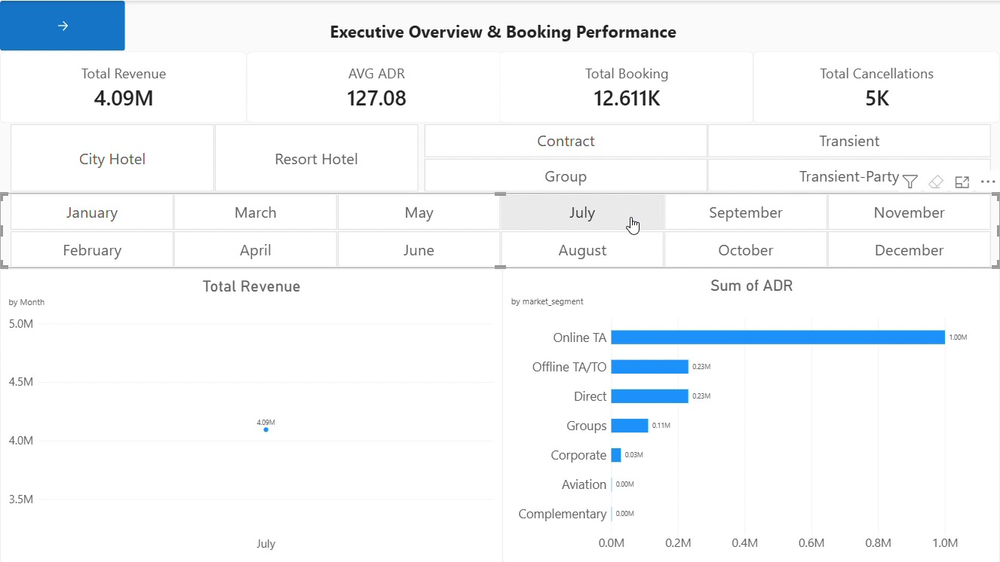

Hotel Booking Performance & Cancellation Diagnostics
Business Problem: 37% cancellation volatility across 119k+ bookings caused operational forecasting inaccuracies and unsold peak rooms.
Dataset & Method: 119,390 reservation records. Cleaned using SQL Server CTEs and modeled with multi-page Power BI DAX time-intelligence.
Key Findings: Bookings made >90 days in advance via OTAs exhibited double the cancellation propensity; formulated dynamic non-refundable tiers.